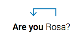
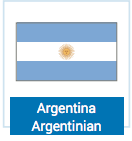
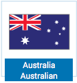
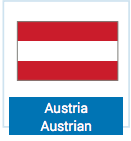
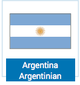
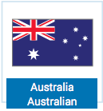
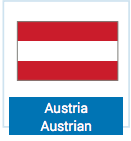

Tópico 1: Identificação e Caracterização Pessoal; Localização no Tempo e no Espaço
1.1 Nice to meet you
Rosa chegou aos Estados Unidos e foi recebida por Amanda, que a levou até sua nova home para conhecer suas housemates. Neste momento Rosa, de uma forma espontânea abraça Carly, demonstrando alegria em ver suas novas amigas pela primeira vez. Ao encontrarem-se, as garotas saudaram-se e apresentaram-se. Acompanhe a continuação da conversa:
Rosa: Nice to meet you, girls!
Carly: Nice to meet you too.
Christine: Welcome to your new home!
Carly: Where are you from in Brazil?
Rosa: I’m from Rio de Janeiro. And you? Are you from Chicago?
Christine: I’m from New York!
Carly: I’m from a small town in California.
Rosa: I’m curious to see my bedroom!
Carly: Of course! Let’s go… your bedroom is upstairs.
É importante observar que quando interagimos com pessoas precisamos nos comunicar com elas. Você pôde acompanhar que, ao se encontrarem, as garotas utilizam o "Hi" para se saudar. Para que você consiga saudar ou se despedir de alguém, no tópico a seguir você conhecerá algumas destas estruturas.
1.2 Greetings and Goodbyes
Cada cultura tem sua forma própria de saudar ou despedir-se de alguém. Observe na tabela algumas expressões utilizadas nestas situações.
Quadro 1 - Greetings
| Greetings | Saudações |
|---|---|
| Hi | Oi |
| Hello | Olá, alô |
| Good morning | Bom dia |
| Good afternoon | Boa tarde |
| Good night | Boa noite |
| Good evening | Boa noite (ao chegar) |
Quadro 2 - Goodbyes
| Goodbyes | Saudações |
|---|---|
| Good night | Boa noite (ao sair) |
| Good bye | Adeus |
| Bye Bye / Bye | Tchau |
| See you tomorrow | Vejo você amanhã |
| See you later | Vejo você depois |
| See you soon | Até breve / Até logo |
Ao se comunicar, além de saudar e despedir-se, é preciso se apresentar. Veja no próximo tópico algumas estruturas para que você possa conversar com outras pessoas numa situação em que seja necessário falar de si.
1.3 Introducing yourself
Quando você está se apresentando a alguém, após cumprimentar essa pessoa, o próximo passo será dizer seu nome. Em inglês, você pode fazer isso de duas formas. Ouça cada uma delas e depois repita substituindo por seu nome ao final de cada frase:
Quadro 3 - Introduction
| Introduction | Apresentação |
|---|---|
| My Name is (Christine Miller) | Meu nome é (Christine Miller) |
| I'm (Christine Miller) | Eu sou (Christine Miller) |
Seja em seu próprio país ou em um país estrangeiro, é muito importante ser polite. Rosa precisa se apresentar para o diretor de sua College, veja como eles interagem no tópico a seguir.
1.4 Being polite
No dia seguinte, já instalada em sua nova house, Rosa está ansiosa por conhecer o campus onde irá estudar. Ela é recebida por John Smith, o director da College. Nesta conversa, a tendência é que Rosa tenha um comportamento um pouco mais formal ao se apresentar, diferente de como agiu quando conversou com suas housemates. Observe como se dá a conversa:
Rosa: Excuse me.
Mr. Smith: Good morning! Welcome to Columbus College of Chicago! My name is John Smith and I’m the dean here. What is your name?
Mr. Smith: It’s nice to meet you Miss Souza.
Rosa: Nice to meet you too, Mr. Smith.
Mr. Smith: Where are you from, Miss Souza?
Rosa: I’m from Brazil.
Mr. Smith: Oh, nice! Here is your schedule. It’s a pleasure to have you as our student.
Rosa: Thank you, Mr. Smith.
Mr. Smith: You’re welcome.
Ao se apresentar ao Mr. Smith, Rosa utiliza a expressão "Nice to meet you" para expressar que havia sido um prazer conhecê-lo. Existem outras expressões que transmitem essa mesma ideia. Veja quais são elas na tabela a seguir:
Como há mais de uma expressão, você pode utilizar a que se sentir mais à vontade. Por outro lado, se alguém se dirigir a você utilizando alguma dessas estruturas, você deverá usar a mesma acrescida de too para responder.
Rosa também usa as expressões Excuse me e Thank you, que denotam cordialidade. Expressões como essa, que indicam politeness são sempre utilizadas em inglês e constituem uma parte essencial da cultura dos países onde esse idioma é falado, portanto se acostume a utilizá-las. Para conhecer algumas dessas polite expressions acompanhe a seguir:
Quadro 4 - Polite expressions
| Polite expressions | Expressões de cordialidade |
|---|---|
| Excuse me | Com licença |
| Please | Por favor |
| Thank you / Thanks (informal) | Muito obrigado / Obrigado |
| You’re welcome | De nada |
| I’m sorry / Sorry | Desculpe / Sinto muito |
Nos países onde a língua inglesa é falada, a forma de dirigir-se a uma pessoa é um pouco mais formal do que em nosso país. É muito importante que você não seja sempre informal, tratando seu interlocutor por “você” ou pelo primeiro nome, como se já fossem velhos conhecidos. Você deve estar atento às normas culturais do local onde está, especialmente, quando inserido em um contexto onde costumes e maneiras de viver divergem da sua. Tudo é uma questão de adaptação e respeito aos costumes locais.
Uma maneira de cumprir com esta formalidade é através do uso de Titles and names, que designam um modo mais polite para dirigir-se a alguém. Na conversa com o director, Rosa usa o pronome de tratamento Mr. acompanhado do last name Smith, demonstrando maior respeito e formalidade. Observe outros titles utilizados em inglês:
Exemplo:
Sir: quando você se dirigir a um homem, em geral adulto, casado ou solteiro, sem utilizar seu nome ou sobrenome;
Ma'am (AmE) / Madam (BrE): quando você se dirigir a uma mulher adulta sem utilizar seu nome ou sobrenome;
Miss + last name: quando você se dirigir a uma mulher solteira e, em geral, jovem;
Mr + last name: quando você se dirigir a um homem, casado ou solteiro;
Ms + last name: utilizado quando alguém se dirige a mulher adulta que pode ou não ser casada. É frequente em ambientes de trabalho, onde o estado civil das mulheres não é relevante;
Mrs + last name: quando você se dirigir a uma mulher casada que utiliza o sobrenome do marido;
Professor + last name: quando você se dirigir a (ou falar sobre) um professor universitário.
Por isso, a não ser que a pessoa diga que pode chamá-la pelo primeiro nome, ou que você tenha confiança de que já tem um certo grau de intimidade para dirigir-se a ela pelo primeiro nome, você pode utilizar um title específico. Por exemplo, o nome de Rosa ficaria: Miss Souza. Como muitos desses títulos são utilizados com o last name da pessoa, é importante saber como se chamam as partes de um nome.
Quadro 5 - Full name
| Rosa | Maria | Guimarães | Souza |
|---|---|---|---|
| Name / First name | Second name | Middle name | Surname / Last name/ Family name |
Para aperfeiçoar o sua aprendizagem na língua inglesa, a seguir você estudará o alfabeto que irá ajudá-lo na escrita e na pronúncia das palavras.
1.5 The alphabet
Numa situação comunicativa é comum haver dúvidas quanto à escrita de certos nomes de pessoas ou lugares. Para um estrangeiro, um sobrenome como, por exemplo, Magalhães, pode ser tão complicado de entender quanto Schleiermacher é difícil para brasileiros, não é verdade? Para resolver situações como essa, conhecer o alfabeto e conseguir soletrar as palavras é fundamental. Acompanhe como isso acontece em um diálogo entre Rosa e um funcionário do aeroporto de Chicago:
Attendant: Good afternoon, may I help you?
Rosa: Hi, I'm Rosa… Rosa Souza. S-O-U-Z-A.
Attendant: Rosa Souza?
Rosa: Yes, Rosa Souza.
Você deve ter percebido, pela forma como Rosa soletra seu sobrenome, que as letras em inglês têm “nomes” diferentes do alfabeto português. Acompanhe a seguir a pronúncia do alfabeto em língua inglesa.
E-mail and web page addresses
Entre as informações pessoais que podemos fornecer está o endereço de e-mail ou da web page. Estas informações envolvem o uso de alguns caracteres específicos. Os mais comuns são:
Quadro 6 - Caracteres
| @ | at |
| . | dot |
| / | slash |
| _ | underscore |
| : | colon |
| - | hyphen |
| * | asterisk |
| # | hash |
O endereço eletrônico de Rosa seria lido, então, da seguinte forma:
Já o web address da web page que Rosa acessava no Brasil para renovar sua matrícula na universidade é lido assim:
Com o conteúdo estudado até o momento é possível que já você já consiga saudar e despedir-se, comunicar-se de modo cordial e informar nome e endereço de e-mail. Para dar continuidade na sua aprendizagem, é necessário estudar os subject pronoums.
1.6 Subject pronouns
Observe o exemplo abaixo:
Dube é um rapaz muito inteligente e divertido. Dube se apresenta em um Pub toda a semana. Dube é namorado de Christine. Christine, às vezes, se estressa com Dube por conta de seu jeito despreocupado de levar a vida. Dube e Christine se conhecem há bastante tempo.
É repetitivo usar o nome de Dube e Christine em todo texto, não é verdade? Quando precisamos nos referir às pessoas sem utilizar o nome, fazemos uso dos pronomes pessoais. Com isso, o texto poderia ficar assim:
Dube é um rapaz muito inteligente e divertido. Ele se apresenta em um Pub toda a semana. Dube é namorado de Christine. Ela, às vezes, se estressa com ele por conta do jeito despreocupado do rapaz de levar a vida. Eles se conhecem há bastante tempo.
O uso de pronomes sujeitos para não tornar o texto redundante também acontece em inglês. No caso do exemplo, todas as ocorrências com os nomes Dube e Christine estão em posição de sujeito da oração, por isso utilizamos os pronomes sujeito para substituir os nomes. Os subject pronouns são chamados assim por substituírem o sujeito da oração e, na língua inglesa, não pode ser omitido. Veja a relação dos pronomes sujeitos:
Quadro 7 - Subject pronouns
| Subject pronouns | Examples |
|---|---|
| I | I am a journalist. |
| You (singular) | You are a comedian |
| He | John is a director. He is a director. |
| She | Rosa is a student. She is a student. |
| It | Mike is my dog. It is my dog. |
| We | Rosa and I are in Chicago. We are in Chicago. |
| You (plural) | You are Billy and Victor. |
| They | Billy and uncle Charles are from the United Kingdom. They are from the United Kingdom. |
- A primeira pessoa do singular “I” é sempre escrita em letra maiúscula.
- É possível que, antes de saberem o sexo de um bebê em gestação, as pessoas se refiram a ele com it.
- It também é utilizado para objetos ou para animais no singular quando não se sabe (ou não interessa) o sexo. Contudo, quando são animais de estimação e provavelmente sabemos seu sexo é comum usarmos he/she.
- Em português, orações do tipo “Está frio” não possuem sujeito. Já no inglês, em casos como esse, usaríamos o It, uma vez que o verbo sempre é acompanhado de sujeito: It is cold.
- Há dois usos do pronome you: para designar o singular e para designar o plural, sabendo-se que a diferenciação entre os dois será feita através do contexto. Por exemplo: You are my best friend. You are my best friends.
O pronome they pode se referir ao plural de substantivos masculinos, femininos, como também masculinos e femininos juntos. Para seguir ampliando o conteúdo que lhe ajudará a fornecer informações sobre si para outras pessoas é preciso conhecer o verbo To be.
1.7 Verb To be
To be é normalmente o primeiro verbo que se aprende já que é usado para falarmos de nós mesmos, por significar ser ou estar. Veja, por exemplo, como ele aparece logo no início do diálogo entre Rosa e o diretor da Columbus College of Chicago quando eles falam de si mesmos:
Mr. Smith: Good morning! Welcome to Columbus College of Chicago! My name is John Smith and I’m the dean here. What is your name?
Rosa: Good morning. My name is Rosa Souza.
O To be é um verbo com exceção para várias regras relativas a outros verbos em inglês, ele é um dos poucos que sofrem variação ao ser conjugado de acordo com seu respectivo sujeito.
To be - affirmative
Veja a conjugação do verbo To be no presente simples na forma afirmativa:
Quadro 8 - Affimative
| Affimative | Contraction | Português |
|---|---|---|
| I am | I'm | Eu sou / estou |
| You are | You're | Você é / está - tu és / estás |
| He is | He's | Ele é / está |
| She is | She's | Ela é / está |
| It is | It's | Ele (a) é / está |
| We are | We're | Nós somos / estamos |
| You are | You're | Vocês são / estão - vós sois / estais |
| They are | They're | Eles são / estão |
To be - negative
Já a forma negativa do verbo To be é construída acrescentando-se a partícula not à sua forma afirmativa. Observe que é possível tanto manter a contraction do pronome com o verbo quanto contrair o verbo com o not.
Quadro 9 - Negative
| Negative | Contraction | Português |
|---|---|---|
| I am not | I’m not | Eu não sou / não estou |
| You are not | You’re not / You aren't | Você não é / não está - tu não és / Não estás |
| He is not | He’s not / He isn't | Ele não é / está |
| She is not | She’s not / She ins't | Ela não é / não está |
| It is not | It’s not / It isn't | Ele (a) não é / não está |
| We are not | We’re not / We aren't | Nós não somos / não estamos |
| You are not | You’re not / You aren't | Vocês não são / não estão - Vós não sois / não estais |
| They are not | They’re not / They aren't | Eles não são / não estão |
To be - interrogative
Na forma interrogativa, ocorre uma inversão da ordem sujeito-verbo, ou seja, o verbo To be localiza-se antes do sujeito. Acompanhe a tabela:
Quadro 10 - Interrogative
| Interrogative | Português |
|---|---|
| Am I? | Eu sou / estou? |
| Are you? | Você é / está - tu és / estás? |
| Is he? | Ele é / está? |
| Is she? | Ela é / está? |
| Is it? | Ele (a) é / está? |
| Are we? | Nós somos / estamos? |
| Are you? | Vocês são / estão - Vós sois / estais? |
| Are they? | Eles são / estão? |
Observe a inversão entre sujeito e verbo no exemplo a seguir:
As Yes/No Questions com o verbo To be exigem respostas do tipo Sim ou Não. Essas respostas são chamadas de short answers (respostas curtas). Veja como elas são estruturadas:
Quadro 11 - Questions
| QUESTIONS To be |
SHORT ANSWERS Affirmative |
SHORT ANSWERS Negativa |
|---|---|---|
| Am I right? | Yes, you are. | No, you aren’t. |
| Are you a student? | Yes, I am. | No, I’m not. |
| Is he a teacher? | Yes, he is. | No, he isn’t. |
| Is she a secretary? | Yes, she is. | No, she isn’t. |
| Is it a library? | Yes, it is. | No, it isn’t. |
| Are we in the USA? | Yes, we are. Yes, you are. |
No, we aren’t. No, you aren’t. |
| Are you American? | Yes, we are. | No, we aren’t. |
| Are they classmates? | Yes, they are. | No, they aren’t. |
Observe que nas short answers afirmativas não utilizamos contractions - o verbo To be aparece sempre separado do pronome. Já nas negativas, costuma-se utilizar uma das formas com contraction apresentadas na tabela. Quando uma pessoa responde a uma pergunta envolvendo o pronome we é importante lembrar que ela pode ou não estar incluída, o que influencia na escolha do pronome para a resposta. Ele pode então ser we (a pessoa que responde se inclui) ou you (os outros), ou seja, quem responde não se inclui. Observe no exemplo:
Are we at home?
Yes, we are.
Yes you are.
Por fim, sempre surge a dúvida: “Posso responder uma Yes/No Question dizendo simplesmente Yes ou No?” A resposta é: sim, mas isso depende da situação. Quando se trata de uma situação informal, como em uma conversa entre amigos ou familiares, você pode responder com Yes ou No. Se a situação for formal, por exemplo, em uma conversa entre você e o seu advisor, é preferível utilizar as short answers.O verbo To be permite que você se comunique em distintas situações. A seguir você estudará os possessive adjectives que lhe auxiliarão a expressar posse.
1.8 Possessive adjectives
Os possessive adjectives são os adjetivos possessivos em inglês, ou seja, palavras que designam que alguém possui alguma coisa.
O fato de serem adjetivos possessivos implica terem uma posição fixa - antes daquilo que é possuído - e não variarem em número em função da posse - ou seja, não há diferença se a coisa possuída for singular ou plural. Já a pessoa que possui pode variar em singular ou plural.
Por exemplo, ao ver Amanda pela primeira vez, no aeroporto, Rosa pensou:
O adjetivo possessivo her refere-se à Amanda (pessoa do singular) que possui uma coisa também no singular (casaco). Rosa nota ainda os sapatos de Amanda, e na frase, Her continua referindo-se a Amanda (pessoa do singular), mas o que ela possui (os sapatos) é plural. Apesar disso, o possessive adjective (her) continua o mesmo. Observe outra situação. Enquanto Amanda dirige para casa, Rosa a indaga sobre como são Christine e Carly. Amanda comenta:
O pronome possessivo their (delas) refere-se à Christine e Carly (pessoas do plural - they), independentemente do que elas possuem. Ao chegar em frente à casa das meninas, Rosa igualmente utiliza their porque a casa é delas, ainda que o que elas possuem (a casa) seja singular. Veja:
Relembrando então: o possessive adjective se refere a quem possui, sendo independente daquilo que é possuído. Observe a lista dos adjetivos possessivos em relação às pessoas do singular e do plural:
Quadro 12 - Subject pronouns and Possessive adjectives
| Subject pronouns | Possessive adjectives |
|---|---|
| I | My |
| You | Your |
| He | His |
| She | Her |
| It | Its |
| We | Our |
| You | Your |
| They | Their |
Mais uma vez, é bom lembrar que os adjetivos possessivos sempre vêm seguidos daquilo que é possuído. Assim, a frase Her is beautiful (Dela é lindo) é tão incorreta em inglês quanto em português, pois falta a palavra possuída (dela o quê?).
Similar sounds in Possessive adjectives and to be contractions
Você recentemente viu que o verb To be, quando contraído com o subject pronoun, adquire uma pronúncia diferente da que teria se estivesse por extenso. O som da contraction acaba por assemelhar-se à pronúncia do possessive pronoun correspondente. Percebendo isso você poderá identificar que, apesar de algumas soarem iguais e outras parecidas para aprendizes de língua inglesa, estas contractions e os possessives têm significados bem diferentes.
Quadro 13 - Contractions
| Contractions | Possessive pronouns |
|---|---|
| Your're | Your |
| He's | His |
| It's | Its |
| They're | Their |
Outro uso muito importante para o Verb to be e os Possessive pronouns é a designação das nacionalidades. Para isso, acompanhe a seguir o nome de alguns countries e nationalities.
1.9 Countries and nationalities
Quando você está no exterior, é comum mencionar seu país e/ou cidade de origem ou sua nacionalidade. Da mesma forma, pessoas estrangeiras vão lhe informar sua origem, portanto é importante conhecer os nomes dos países e as nacionalidades em inglês. Observe a continuação da conversa de Rosa com o funcionário na chegada ao aeroporto.
Attendant: All right. Where are you from, Miss Souza?
Rosa: Oh, right. You’re Brazilian. Nice to meet you, Rosa.
Attendant: All right. Where are you from, Miss Souza?
Rosa: Nice to meet you too. Are you from the USA?
Attendant: No... I’m from Canada.
Rosa: All right, you’re Canadian!
Observe no diálogo que o atendente pergunta à Rosa:
A palavra where acompanhada da preposição from (que nessa pergunta vem obrigatoriamente ao final da frase), é utilizada para saber de onde uma pessoa vem, ou seja, sua origem - país ou cidade. Perceba a inversão que ocorre em are you, que é obrigatória por ser uma pergunta. Na resposta de Rosa, por ser uma afirmação, a inversão já não é mais necessária. Observe:
I'm from Brazil.
Perceba que Rosa se refere a seu país como Brazil e o atendente à sua nacionalidade como Brazilian. Veja como outros países e nacionalidades são designados em inglês:
Flags, countries and nationalities:
 





No hugging, please!
Brazil and the United States are different not only in terms of their languages, but also in their customs. One important area in which the two countries are different is physical contact. Brazilian people are often very affectionate: they touch, hug or kiss people when they meet. American people usually only hug or kiss family members and close friends. If you watched the episode, you probably noticed how uncomfortable Carly felt when Rosa hugged her the moment they first met. So, when you meet someone - and especially when you meet a person for the first time or you are introduced to someone -, no hugging or kissing, please! Brazil and USA deal with physical contact in a different way, so, just a wave or a handshake is OK.
1.10 Resumo e glossário
Glossary
Small: pequeno
Town: cidade
Bedroom: quarto
Upstairs: andar de cima
Excuse me: com licença
Nice to meet you: Prazer em conhecê-lo
Here is your schedule: aqui está o seu horário
I’m from: eu sou de...
Advisor: orientador
Customs: costumes
In which: na qual
Often: frequentemente
Usually: normalmente
Affectionate: afetuoso
Close: próximo
To touch: tocar
To hug: abraçar
To kiss: beijar
To meet: encontrar(-se)
Someone: alguém
Just: apenas
Wave: abano; aceno
Handshake: aperto de mão
To have you as our student: tê-la como nossa aluna
Not only: não só/não apenas